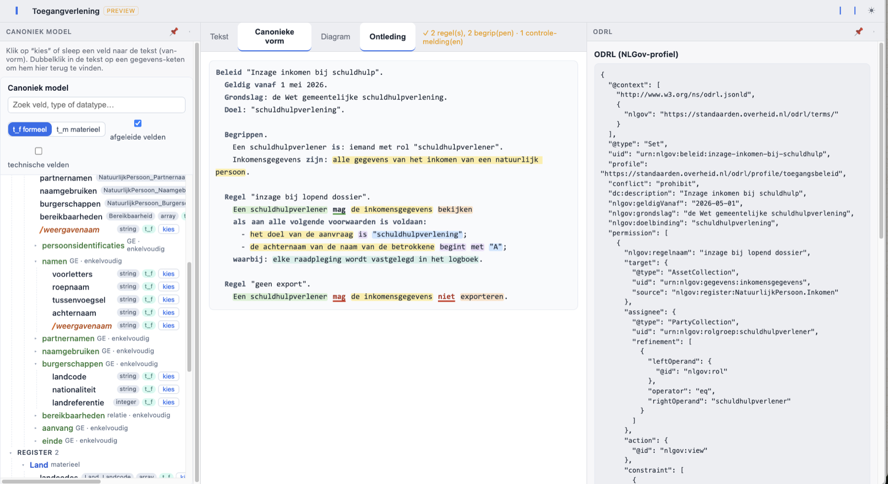
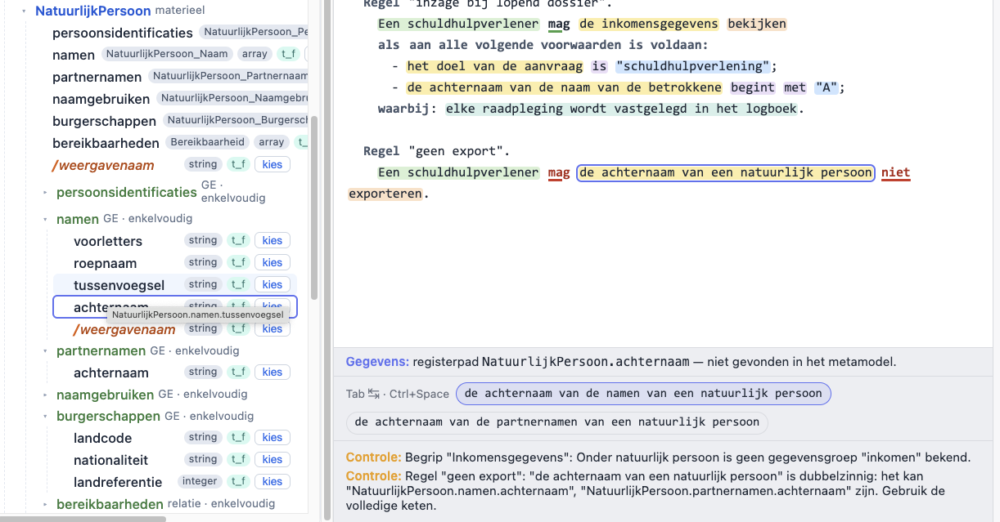
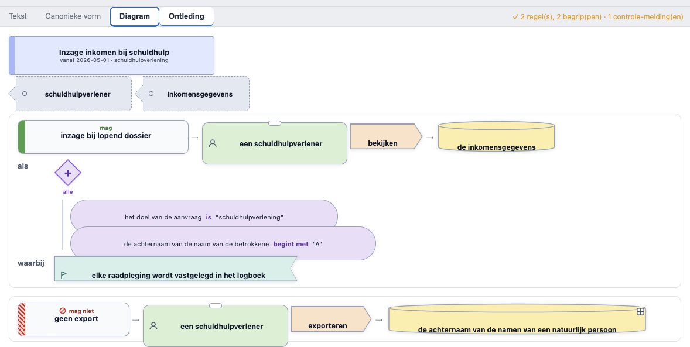
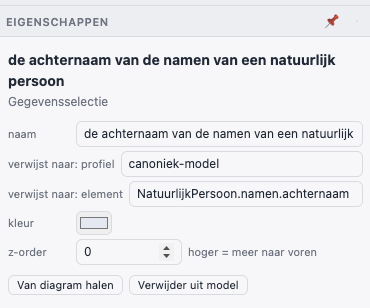
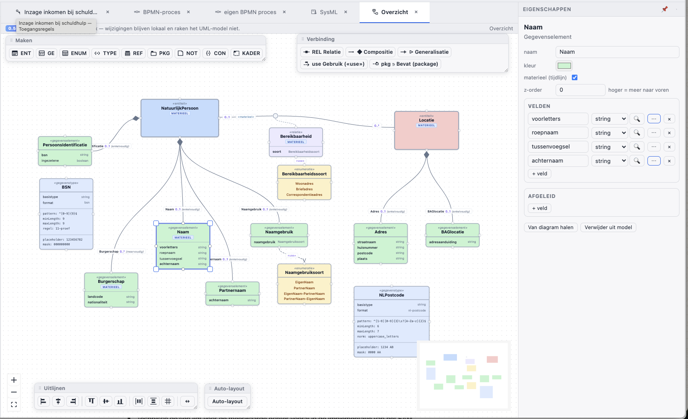

Klare taal voor toegangsbeleid — taal, editor en diagramprofiel in Omnium Studio
Toegangsbeleid leeft vandaag op twee plekken die elkaar niet kennen: in beleidsdocumenten (leesbaar, maar niet uitvoerbaar) en in autorisatieregels van systemen (uitvoerbaar, maar voor niemand leesbaar). Toegangsspraak is een experiment om die kloof te sluiten: één beleidstekst in gewoon Nederlands die exact één betekenis heeft, verankerd is aan het onderliggende gegevensmodel, en verliesvrij heen en weer kan naar ODRL (JSON-LD, NLGov-profiel) — en via dat ODRL-spoor later naar runtime-engines als OPA/Rego, Cedar of XACML.
De hele taal hangt aan één kernzin:
<wie> mag <gegevens> <handeling> — of mag … niet — [ als <voorwaarden> ] [ waarbij: <verplichtingen> ]
Een volledig (klein) beleid, met de kleuren van de zinsontleding uit de editor:
Beleid "Inzage inkomen bij schuldhulp". Geldig vanaf 1 mei 2026. Grondslag: de Wet gemeentelijke schuldhulpverlening. Doel: "schuldhulpverlening". Begrippen. Een schuldhulpverlener is: iemand met rol "schuldhulpverlener". Inkomensgegevens zijn: alle gegevens van het inkomen van een natuurlijk persoon. Regel "inzage bij lopend dossier". Een schuldhulpverlener mag de inkomensgegevens bekijken als aan alle volgende voorwaarden is voldaan: - het doel van de aanvraag is "schuldhulpverlening"; - de achternaam van de naam van de betrokkene begint met "A"; waarbij: elke raadpleging wordt vastgelegd in het logboek. Regel "geen export". Een schuldhulpverlener mag de achternaam van de namen van een natuurlijk persoon niet exporteren.

Ja — er ligt een formele grammatica onder, en er komt geen taalmodel of NLP-gokwerk aan te pas. Toegangsspraak is een gecontroleerde natuurlijke taal (CNL), in dezelfde familie als RegelSpraak van de Belastingdienst: het leest als Nederlands, maar elke zin volgt een vast patroon uit een vaste grammatica en heeft precies één betekenis. Het parsen is daardoor volledig deterministisch — dezelfde tekst levert altijd dezelfde boom, en wat niet in de grammatica past is een foutmelding (in klare taal, met regel- en kolomnummer), geen interpretatie.
De kern in compacte EBNF (leesvorm; de editor schrijft altijd de canonieke vorm terug):
beleid = kop , [ begrippen ] , { regel } ;
kop = "Beleid" , naam , "." , { kopregel } ;
kopregel = "Geldig vanaf" , datum , [ "tot" , datum ] , "."
| "Grondslag:" , tekst , "." | "Doel:" , string , "." ;
begrippen = "Begrippen." , { begripsdef } ;
begripsdef = [ lidwoord ] , naam , "is:" , "iemand" , kenmerken , "." (* wie *)
| [ lidwoord ] , naam , ("is:"|"zijn:") , wat , [ "waarvan" , voorwaarde ] , "." ; (* wat *)
kenmerken = "met" , kenmerk , string , { "en" , kenmerk , string } ;
regel = "Regel" , naam , "." , kernzin ;
kernzin = wie , "mag" , wat , [ "niet" ] , actie ,
[ "als" , voorwaardeblok ] ,
[ "waarbij:" , plicht , { ";" , plicht } ] , "." ;
wie = lidwoord , begripsnaam | "iemand" , kenmerken ;
wat = [ lidwoord ] , begripsnaam
| "alle gegevens van" , verwijzing
| verwijzing ;
voorwaardeblok = voorwaarde
| kwantor , ":" , { "-" , ( voorwaarde | voorwaardeblok ) , [ ";" ] } ;
kwantor = "aan alle volgende voorwaarden is voldaan" (* AND *)
| "aan ten minste één van de volgende voorwaarden is voldaan" (* OR *)
| "aan precies één van de volgende voorwaarden is voldaan" ; (* XOR *)
voorwaarde = term , vergelijking , [ rechterdeel ] (* stelling én bijzin, §2.4 *)
| "er" , [ "is" ] , [ "geen" ] , omschrijving , [ "voor" , verwijzing ] , [ "is" ] ;
term = string | getal | datum | verwijzing ;
verwijzing = groep , { "van" , groep } (* van-keten; laatste groep = basis *)
| pad ; (* technische shorthand: NatuurlijkPersoon.Naam.achternaam *)
groep = lidwoord , woord , { woord } ;
basis = "de aanvrager" | "de betrokkene" | "de aanvraag" | "de gegevens" (* ankers *)
| typenaam ;
vergelijking = (* uit het operator-register, §2.3 *) ;
actie = (* uit het actie-register: bekijken, opvoeren, veranderen, exporteren, … *) ;
plicht = (* uit het plichten-register: "elke raadpleging wordt vastgelegd in het logboek", … *) ;
De grammatica is LL(1)-achtig: elk alternatief is op het eerste woord (of token) te onderscheiden, zodat de parser nooit hoeft te backtracken over structuur. Interpunctie is betekenisdragend, net als in RegelSpraak: de opsomming met streepjes is de boolese structuur (AND/OR/XOR, nestbaar via insprong), waardoor de klassieke en/of-ambiguïteit van lopende tekst niet kán ontstaan.
De implementatie is een handgeschreven tokenizer + recursive-descent parser
(plain JavaScript, geen parser-generator, geen dependencies). De tokenizer kent vijf
tokensoorten — woord, getal, string (tussen aanhalingstekens,
ook typografische), pad (het technische registerpad zoals
NatuurlijkPersoon.Naam.achternaam) en leesteken — plus het
opsommingsstreepje, dat zijn insprong meedraagt: daarmee bepaalt de parser de nesting van
voorwaardeblokken. Elk token onthoudt zijn bronpositie.
De parser volgt het klassieke recept één functie per grammaticaregel:
parseBeleid → parseBegrip / parseRegel → parseWat / parseVoorwaardeblok →
parseVoorwaarde → parseTerm → parseVerwijzing. Het resultaat is een
AST (abstracte syntaxboom) die positie-onafhankelijk is, plus een losse
lijst spans: bronposities per zinsdeel-soort (subject, gegevens, handeling,
vergelijking, waarde, plicht, modaliteit). Die spans voeden de zinsontleding-weergave in de
editor — de kleuren in het voorbeeld hierboven komen rechtstreeks uit de parser, niet uit
een aparte highlighter. Doordat de spans buiten de AST blijven, is de AST zelf exact
vergelijkbaar over round-trips heen.
De grammatica kent alleen de slots "vergelijking", "handeling" en "plicht"; de
invulling komt uit registers (gewone datalijsten). De kernset bevat o.a.
is, is niet, is groter/kleiner dan,
is ten minste/hoogste, begint met, eindigt op,
bevat, is een van (…), ligt tussen … en …,
is bekend/onbekend — elk met zijn ODRL-tegenhanger
(odrl:eq, nlgov:begintMet, …) en de waardetypen waarop hij past.
De parser matcht operatoren longest match first, zodat "is kleiner dan" wint van "is".
Een domeinprofiel registreert extra termen zonder één grammaticaregel te wijzigen — er is
een geo-profiel meegeleverd ("valt geheel binnen", "overlapt", → geo:within,
geo:intersects). Dat is bewust het ODRL-Profile-mechanisme,
doorgetrokken naar de taal.
Correct Nederlands vraagt na "als" de bijzinsvolgorde ("… als de taal niet "nl" is"), terwijl een opsommingsregel de stellingsvorm heeft ("de taal is niet "nl""). De parser accepteert beide: herkent hij na de linksterm geen operator, dan haalt hij het werkwoord aan het einde van de voorwaarde naar voren en parseert het geheel opnieuw als stellingsvorm. Herformatteren normaliseert naar de canonieke vorm per context (bijzin na als/waarvan, stelling in opsommingen). Eén betekenis, twee leesbare schrijfwijzen.
Na het parsen volgt de semantische stap, en die maakt de taal meer dan een grammatica-oefening.
Naar gegevens verwijs je in de van-vorm: "de achternaam van de naam van een
natuurlijk persoon" — het woord "van" volgt de compositie in het model in omgekeerde richting.
Zo'n keten wordt geresolvd tegen het echte metamodel (de schema-API van het
register): de keten mag verkort worden zolang hij eenduidig blijft ("de achternaam van een
natuurlijk persoon" volstaat als er maar één veld achternaam onder
NatuurlijkPersoon hangt). Is de verwijzing dubbelzinnig — achternaam bestaat
zowel onder Naam als onder Partnernaam — dan komt er een
controle-melding en biedt de editor de kandidaten aan; één klik vervangt de keten door de
eenduidige vorm (figuur 2).
Dezelfde stap doet typebewaking: "begint met" kan alleen met tekst, een datumveld vergelijk je niet met een getal, en enum-velden alleen met hun toegestane waarden — met foutmeldingen die zelf ook klare taal zijn ("'begint met' kan alleen met tekst; 'geboortedatum' is een datum. Bedoelde je 'is eerder dan'?"). De ODRL-uitvoer gebruikt de geresolvede registerpaden.

De tekst is de bron; de canonieke vorm en de ODRL-weergave zijn projecties van dezelfde AST.
De geteste garantie is: render(parse(t)) is de canonieke schrijfwijze van
t, en parse(render(b)) = b voor elk beleid. Diezelfde eis geldt
langs de diagramkant (§4). Daarmee is álles wat in het register staat per constructie
leesbaar — er kan geen policy bestaan die niet als Nederlandse tekst te tonen is.
De afbeelding op ODRL is deterministisch en behoudt de structuur één-op-één:
| Toegangsspraak | ODRL (JSON-LD, NLGov-profiel) |
|---|---|
| Beleid + kopregels (geldig, grondslag, doel) | Set met nlgov:geldigVanaf, nlgov:grondslag, nlgov:doelbinding |
| mag / mag … niet | permission / prohibition |
| begrip "wie" (iemand met rol …) | PartyCollection met refinement |
| begrip "wat" / van-keten | Asset / AssetCollection met registerpad als source |
| handeling (bekijken, exporteren, …) | action (nlgov:view, nlgov:export, …) |
| voorwaardeblok (alle / ten minste één / precies één) | constraint / LogicalConstraint (and / or / xone) |
| waarbij: plichten | duty (nlgov:log, …) |
| vaste conflictregel: verbod wint, default deny | conflict: prohibit |
Zo wordt de regel "inzage bij lopend dossier" uit §1 dit fragment (ingekort):
"permission": [{
"nlgov:regelnaam": "inzage bij lopend dossier",
"target": { "@type": "AssetCollection", "uid": "urn:nlgov:gegevens:inkomensgegevens",
"source": "nlgov:register:NatuurlijkPersoon.Inkomen" },
"assignee": { "@type": "PartyCollection", "uid": "urn:nlgov:rolgroep:schuldhulpverlener",
"refinement": [{ "leftOperand": {"@id": "nlgov:rol"}, "operator": "eq",
"rightOperand": "schuldhulpverlener" }] },
"action": { "@id": "nlgov:view" },
"constraint": [
{ "leftOperand": {"@id": "nlgov:doelbinding"}, "operator": "eq",
"rightOperand": "schuldhulpverlening" },
{ "leftOperand": {"@id": "nlgov:betrokkene:naam.achternaam"},
"operator": "nlgov:begintMet", "rightOperand": "A" } ],
"duty": [{ "action": {"@id": "nlgov:log"} }]
}]
Omnium Studio heeft een generieke diagrammotor met profielen (vormentaal + regels per notatie). Voor toegangsbeleid bestaan er twee weergaven op dezelfde AST:
NatuurlijkPersoon.namen.achternaam in het profiel canoniek-model.

canoniek-model, element NatuurlijkPersoon.namen.achternaam.Het canonieke gegevensmodel zelf staat in dezelfde tool, in een gespecialiseerde UML-vorm (entiteiten, gegevenselementen, gegevenstypen met patronen en enumeraties). Dat model is tegelijk de bron waaruit elders een bitemporeel register wordt gegenereerd — maar voor de policytaal is het vooral: de plek waar de van-ketens naartoe resolven.

Ook het profiel zelf is model: een metamodel van elementtypen (Policy, Toegangsregel, Subject, Handeling, Gegevensselectie, Voorwaarde, Voorwaardepoort, Plicht, Begrip) met hun verbindingsregels (omvat, wie, doet, op, als, waarbij, verwijst naar). Profielen worden in de Studio getekend als diagram en dan geactiveerd tot werkende notatie — het toegangsregel-profiel is dus met zijn eigen mechanisme gebouwd.
Toegangsspraak is een werkend prototype (onderdeel van Omnium Studio, status concept): taal, parser, renderer, ODRL-export, metamodel-controle, editor en diagramprofiel werken en zijn met unit-tests afgedekt (grammatica, round-trip, ODRL, resolutie, suggesties). Het is nadrukkelijk geen runtime-engine — de PDP beslist — en nog geen productiestandaard. Op de rol staan: bitemporele registratie van beleidsteksten (zodat "welk beleid gold er op 1 maart?" een registervraag wordt), de vertalers ODRL → Rego/Cedar, en een nette subgrammatica voor plichten.
Reacties zijn welkom — juist ook op de taalkeuzes: welke zinnen wil een beleidsmaker kunnen schrijven die nu nog niet passen?